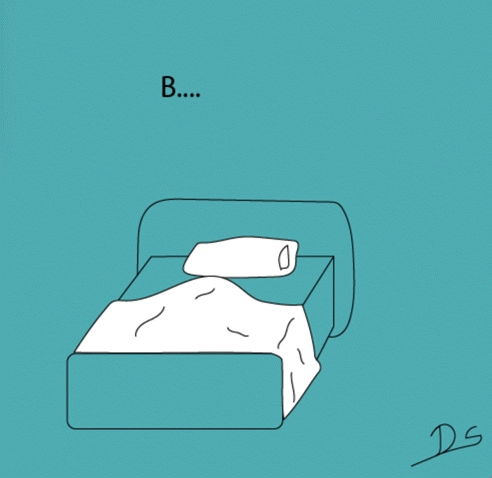
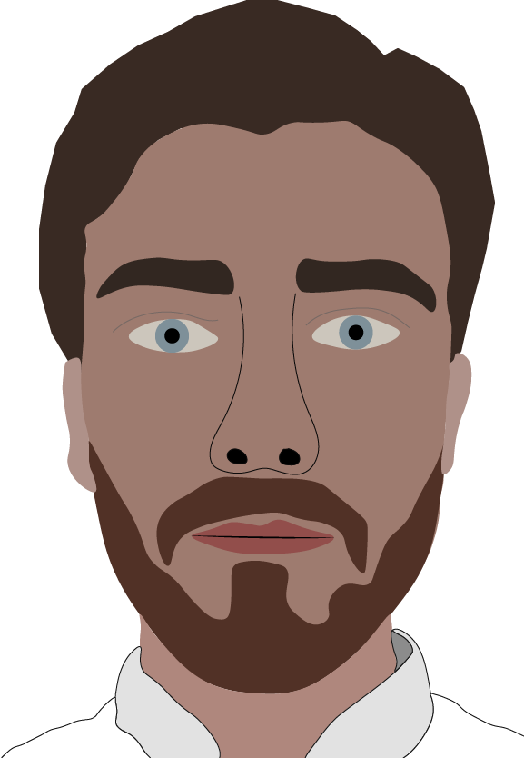
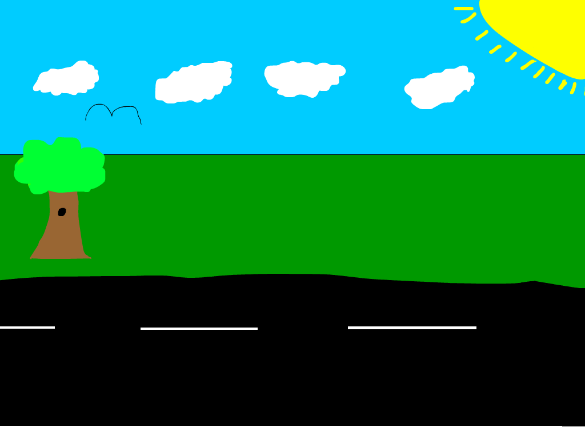
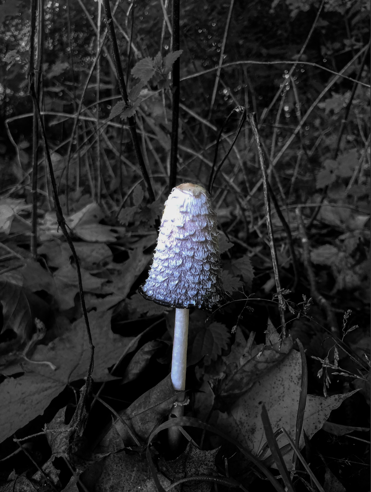

På første semester var vi gennem en workshop i moving art. Opgaven bestod i, at vi skulle udvælge et maleri, hvorefter vi skulle animere maleriet med Adobe Animate og derigennem fortælle en historie.
Min inspiration kom fra en Mr. Bean film fra min barndom, hvor jeg ønskede at genskabe en ikonisk scene, hvor Mr. Bean ødelægger det berømte 'Whistler's Mother' maleri, og derefter forsøger han at redde maleriet ved at tegne et ansigt på.
Min inspiration kom fra en Mr. Bean film fra min barndom, hvor jeg ønskede at genskabe en ikonisk scene, hvor Mr. Bean ødelægger det berømte 'Whistler's Mother' maleri, og derefter forsøger han at redde maleriet ved at tegne et ansigt på.

Dette er en sprite som jeg har lavet ved hjælp af Adobe Illustrator. Jeg har fået opsat et sprite sheet, som jeg har brugt i min HTML og CSS kode for at lave det om til en animation. Det er et lagen, som transformerer sig om til et spøgelse (Opdater siden for at se gif).

Selvportrættet er blevet lavet med Adobe Illustrator. Ved at benytte mig af pen-tool værktøjet har jeg fået lavet flere forskellige lag, som udgør hele mit hovedets kontur samt min skjorte. Derefter er der blevet pålagt farve, så karikaturen får samme udtryk som det originale billede.

Dette er dem første animation, som jeg fik stillet til opgave at konstruere. Der var frie tøjler i forhold til, hvordan animationen skulle se ud. Men da jeg på daværende tidspunkt ikke havde meget erfaring med at animere, så valgt jeg en forholdsvis 'nem' løsning. Opgaven er løst med Adobe Animate.

Billedet er redigeret med Lightroom Classic. Dette er gjort ved at benytte mig af to forskellige masker. Den første maske er til baggrunden for at give den et mørkt udtryk. Den anden maske er blevet brugt på selve svampen for at give den et mere lyst udtryk. Dette er gjort for at fremhæve svampen på billedet.